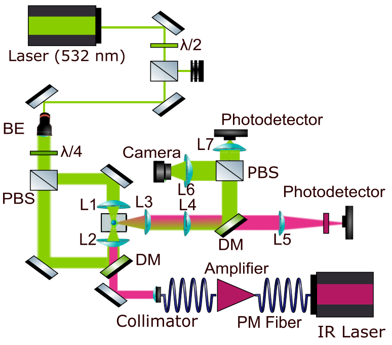
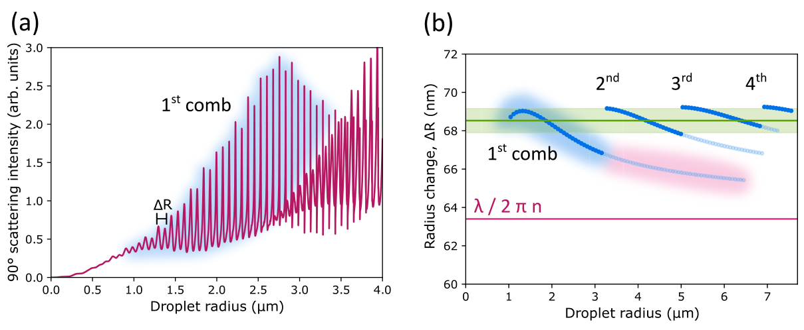
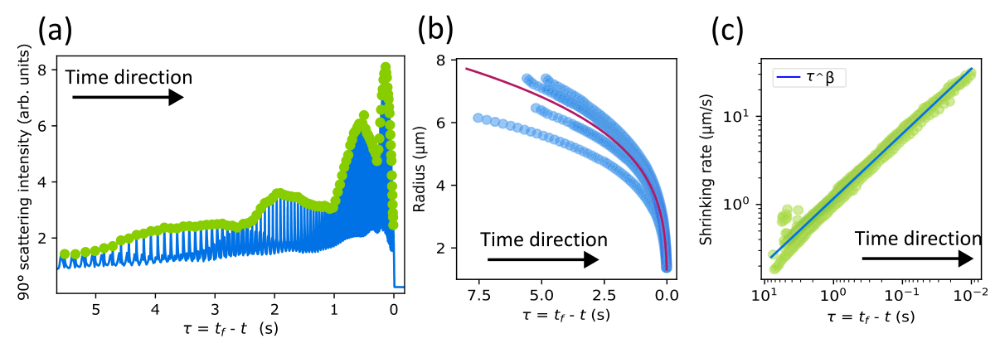
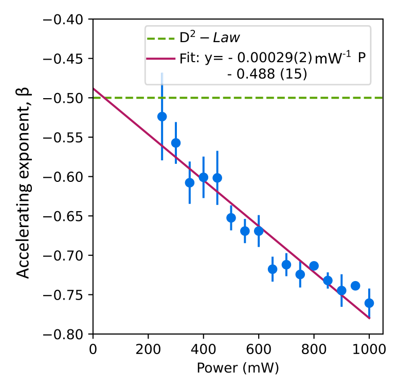
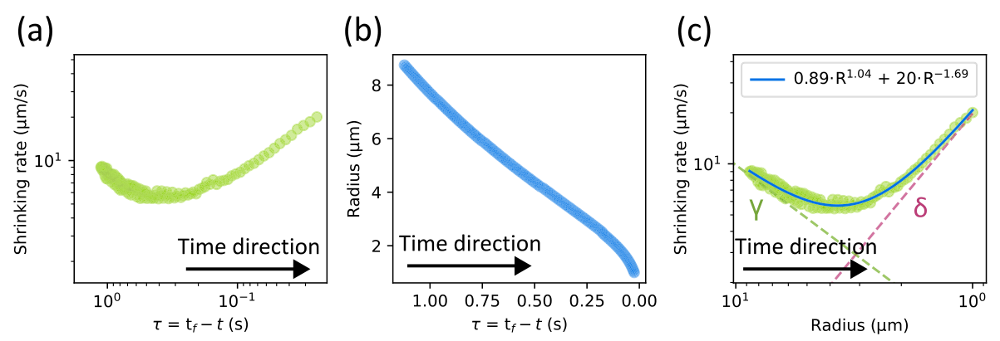
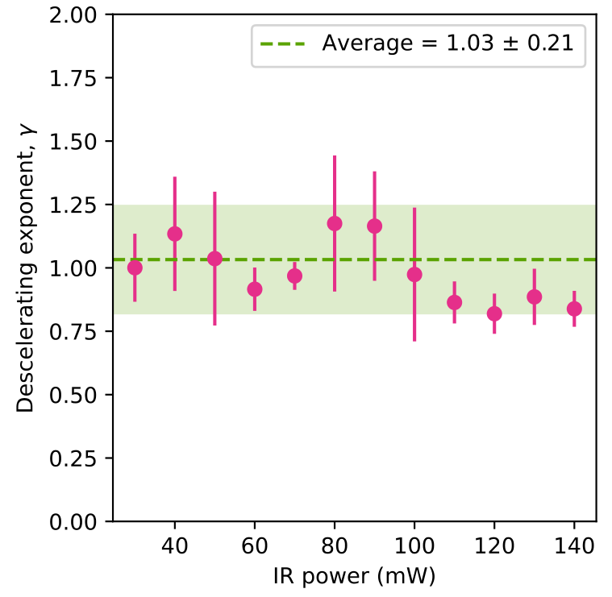
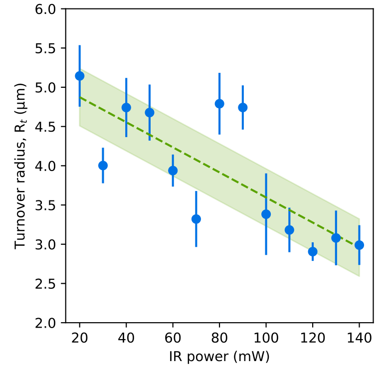
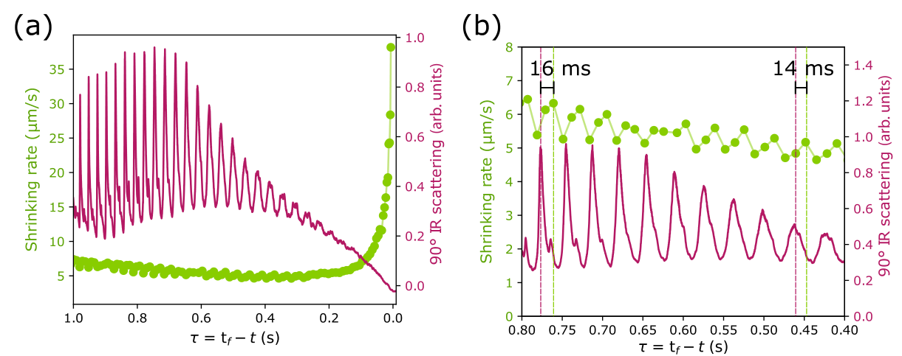

光阱里的水滴为何有时越缩越慢？
在近饱和空气中，强红外辐照使较大水滴的收缩速率近似正比于半径。半径降到约 3–5 μm 后，收缩重新加快。
Irradiation-driven evaporation of micro droplets in an optical trap
研究背景
为什么经典 D² 定律会受到挑战
经典扩散控制蒸发中，球形液滴的蒸发质量流率与半径成正比，而质量变化又与 R²dR/dt 成正比，因此半径收缩速度的大小 s=−dR/dt 与 1/R 成正比：半径越小，单位时间减少的半径越多。由此得到 R² 随时间线性下降。
当液滴吸收可见光或红外光时，还存在额外能量输入。它不仅改变一个常数蒸发系数，还可能改变吸热功率随半径的尺度关系，最终改变收缩的幂指数。本文以悬浮纯水微滴为对象，研究从约 10 μm 缩小到约 1 μm 的过程，试图减少固体基底和自由下落带来的额外影响。
论文的主要贡献有两层：一是用单点散射时间信号解析快速收缩；二是识别强辐照下的减速阶段及随后的转折。它没有建立湿度、温度、光场和蒸汽扩散完全耦合的普适蒸发模型，也没有直接验证燃油液滴或太阳光照下的同一规律。
先统一三个容易混淆的量
| 名称 | 本导读符号 | 含义与单位 |
|---|---|---|
| 半径变化率 | dR/dt<0 | 半径随实际时间的变化，μm/s |
| 半径收缩速度大小 | s=−dR/dt>0 | 本文图中多数正值“shrinking rate”的物理含义，μm/s |
| 蒸发质量流率 | Jm=−dmdrop/dt=4πρlR²s | 单位时间失去的质量，kg/s |
原文还使用剩余寿命 τ=tf−t，因此 s=dR/dτ。以 τ 为横轴的图从左到右倒排，负指数可能看起来具有正斜率。对图 3、5、8，必须同时看坐标刻度和时间箭头，不能仅按曲线向上或向下判断指数。
研究方法
光路：捕获、加热和读出各承担什么任务

- 回答的问题： 怎样把单颗微液滴固定在空气中，同时独立调节加热并测量其收缩？
- 图中证据或方法： 532 nm 连续激光经扩束、波片和偏振分光形成对向捕获光束，L1/L2 聚焦；1550 nm 红外光经光纤放大、准直和二向色镜，由 L2 引入液滴。侧向散射被分光后送至探测器，532 nm 共振用于测量收缩，IR 通道用于追踪红外共振；相机辅助观察。
- 支撑的结论： 该装置使无基底微滴在同一空间位置经历不同辐照条件，并可同步记录两个波长的散射信息。加热通道可在捕获后开启，因此“无 IR”和“有 IR”能够比较。
- 局限与读图注意： 这是光路示意，不是光场实测。532 nm 捕获光本身仍有热效应，不能称为完全无扰动读出。光源标称功率不等于滴处实际吸收功率；滴的位置、束腰、遮挡和气溶胶散射均会改变输入。
| 参数 | 原文条件 |
|---|---|
| 液体 | 超声雾化水滴，无有意添加盐等溶质 |
| 环境 | 腔内温度 297 K，相对湿度 98±3% |
| 初始滴径范围 | 捕获和合并后半径最大约 10 μm，研究范围约 1–10 μm |
| 捕获激光 | 532 nm，gem532 连续激光；入射扩束直径 4.5 mm |
| 捕获透镜与束腰 | L1、L2 均 f=50 mm；束腰 3.7±0.2 μm |
| IR 激光 | 1550±1 nm，TLX1 C-Band Tunable Laser，加 Thorlabs EDFA100P |
| IR 准直与束腰 | 准直直径 1.6 mm；聚焦束腰 30.3±0.2 μm |
| IR 功率扫描 | 0–140 mW，步长 10 mW；图 6 指数统计范围 30–140 mW |
| 强辐照组捕获功率 | 532 nm 捕获光固定为 1 W |
| 雾化器 | MY-520A；持续雾化维持高湿环境 |
复现时需区分两种束腰。 30.3 μm 的 IR 束腰大于研究滴半径，作者据此近似液滴所受外部辐照均匀；3.7 μm 的捕获束腰却小于较大的液滴。不能把 IR 通道的均匀照明近似直接用于全部捕获光计算，也不能把外部照明近似均匀等同于滴内 Mie 场均匀。
高湿环境是本实验条件的一部分。98±3% 包含传感器不确定度，不能机械解释为实际存在 101% 稳定相对湿度；接近饱和时，小的温湿度误差就可能显著影响扩散驱动力。
Fano 共振如何成为半径刻度
水滴近似球形时，部分光通过全内反射沿界面传播，形成回音壁模（WGM）。随着半径下降，共振条件逐次满足，使侧向散射产生一系列尖峰；不同模式组合成 Fano 梳状结构。作者只取高于其他梳齿背景的主导共振。

- 回答的问题： 相邻共振之间到底对应多少半径变化，是否能直接用几何光程近似？
- 图中证据或方法： a 是 532 nm、90° 散射的 Mie 模拟，水的复折射率取 1.3355+2.6544×10⁻⁹i。b 比较几何近似 ΔR=λ/(2πn) 与前四个共振梳中模拟得到的间距；主导共振平均 ΔR=68.5±0.6 nm，绿色带为一倍标准差。
- 支撑的结论： 对作者选择的主导共振，ΔR 近似恒定，因此可由 s≈ΔR/Δt 求半径收缩速度。其空间步长由光学模拟标定，而不由相机像素直接决定。
- 局限与读图注意： 这张图首先是模拟标定，不是实验精度证书。0.6 nm 是所选模拟峰间距的离散程度，未包含实验峰检测、漏峰、折射率温度变化和绝对半径重建误差。不同梳之间切换时不能无条件把任意相邻峰都视作同一半径间隔。
按原文 λ、n 代入几何近似得到 ΔR≈63.40 nm，比 68.5 nm 低约 7.45%；若时间间隔不变，直接采用该近似会按同一比例低估 s。这是本导读的计算说明，不是额外实测结果。
最简处理链： 记录 532 nm 散射时间序列 → 筛选主导共振峰 → 计算相邻有效峰时间间隔 Δt → 用标定 ΔR 求区间平均 s → 结合终点或绝对模式/尺寸锚点重建 R(t) → 分析 s 对 τ 或 R 的关系。
这一测量的有效输出频率随收缩改变，近似为 s/ΔR，不是固定帧率。原文报告最高约 1400 samples/s，但未等同于整个过程均有 1400 Hz 有效速度分辨率，更不能把它当作光电采集卡的原始采样频率。主文未交代探测器和采集卡完整带宽、峰检测阈值、漏峰修正和终点半径处理；这些是实际搭建前应补齐的参数。
作者用 Bo≈10⁻⁷–10⁻⁵ 说明重力变形很小；这一结果支持近球形，却不单独排除光学应力、流动或位置变化带来的测量偏差。
具体结果
结果 1：没有红外加热时，收缩仍受捕获光功率影响

- 回答的问题： 在保留捕获光、关闭 IR 时，半径和收缩速度怎样演化？
- 图中证据或方法： 捕获功率为 1 W。a 展示一颗代表性水滴的散射信号与所选共振峰；b 为 10 颗独立水滴的半径历程；c 将这 10 颗水滴的收缩速度对剩余寿命 τ 作双对数图，拟合 s∝τᵝ，得到 β=−0.74±0.02。
- 支撑的结论： 该条件下临近蒸发终点时 s 增大，属于加速收缩；所测指数比纯 D² 定律的 −1/2 更负，说明 1 W 捕获光下不能把“无 IR”等同于理想无辐照。
- 局限与读图注意： 横轴 τ 从大到小排列，图中正向上升对应负 β。a 是一颗液滴，b/c 是 10 颗；大量共振点不能当成大量独立样本。原图注将捕获波长写成“523 nm”，与正文、图 1 和其他图注的 532 nm 不一致，本导读按整体证据采用 532 nm，并保留该文本问题。

- 回答的问题： 偏离 D² 定律是否随捕获激光功率系统改变？
- 图中证据或方法： 蓝点为不同捕获功率的 β，紫线为线性拟合，绿虚线为 −0.5。图示拟合约为 β=−0.00029(2)P−0.488(15)，P 的单位是 mW。
- 支撑的结论： 在测得功率范围内，β 随功率增大而下降；拟合外推至零功率时接近 −1/2，与无辐照 D² 极限相容。
- 局限与读图注意： 零功率无法维持光阱，因此该点是外推而非直接实验。改变捕获功率也可能改变位置和束流重叠；这些影响未由本图独立排除。线性拟合是当前范围的经验关系，不能任意外推到更高功率。主文没有逐功率列全样本数和所有误差条定义。
D² 定律的推导： 取 Jm=4πRD₀Δc，同时 Jm=4πρlR²s，得到 s=D₀Δc/(ρlR)。在 D₀、Δc、ρl 近似恒定时，R²(t)=R₀²−K′t，或 R²=K′τ，因此 s∝τ⁻¹ᐟ²∝R⁻¹。
注意“半径收缩加速”与“质量损失加速”不是同一命题：D² 模型下 Jm∝R，半径变小时，质量流率反而下降。
结果 2：强 IR 下出现先减速、后加速的转折

- 回答的问题： 强辐照是否只是让原先的 D² 曲线整体变快，还是会改变演化形状？
- 图中证据或方法： 代表性条件为 532 nm 捕获光 1 W、IR 130 mW。a 展示 s 随 τ 的先减后增；b 为持续下降的半径；c 为 s 对 R 的关系，横轴半径也向右减小。作者用 s=A₂Rᵞ+B₂Rᵟ 拟合，得到 γ=1.04±0.05、δ=−1.69±0.05。
- 支撑的结论： 强辐照下，大液滴阶段 s 随 R 下降而下降；到若干微米后，s 再次上升。两种行为发生在同一蒸发事件中，单一恒定系数 D² 定律不能覆盖整个过程。
- 局限与读图注意： 图 5 是一个代表事件，且双幂律是经验拟合。其两项不能直接当作分别测出的“激光热贡献”和“扩散贡献”；作者明确没有解释中间过渡区的完整物理。δ=−1.69 也不等于经典扩散的 −1，因此后段只能称为 D² 类加速行为，不能称为严格恢复 D² 定律。
减速说的是同一强辐照工况下 s 的时间趋势，不是与无 IR 工况的绝对速度比较。作者报告较大液滴在强 IR 下的 s 仍显著高于无 IR 情况，示例比较接近两个数量级；该比较不能推广为全部半径和全部功率下恒定的倍数。

- 回答的问题： 大液滴阶段 s∝R 的标度是否在不同红外功率下重复出现？
- 图中证据或方法： 捕获功率固定为 1 W，IR 功率 30–140 mW。每个紫点为该功率下至多 10 颗液滴拟合 γ 的均值；作者给出整体 γ≈1.03±0.21。
- 支撑的结论： 在实验范围内，较大液滴的减速阶段与半径一次幂近似相容，为体积吸收模型提供标度层面的支持。
- 局限与读图注意： “接近 1”不等于每个功率都严格等于 1，也不等于已经统计证明完全独立于功率。图中较高功率点有偏低趋势；缺少逐组原始数据和误差定义，不能重新判定其显著性。每组是“至多 10 颗”，不能据此写成每组恰为 10 颗。
结果 3：转折半径随 IR 功率增加而减小

- 回答的问题： 加强红外照射会把减速阶段维持到多小的液滴？
- 图中证据或方法： 蓝点表示 s(R) 最小值所对应的平均半径 Rt。IR 功率约 20–140 mW，捕获功率保持 1 W。转折半径总体从约 5 μm 降至约 3 μm，线性拟合斜率为 −0.018±0.004 μm/mW。
- 支撑的结论： 在该装置和环境中，增强 IR 使减速阶段延伸至更小半径。整体趋势与辐照项相对作用增强的解释一致。
- 局限与读图注意： 各功率均值并非严格单调，不能抹去离散点只讲直线。Rt 是经验曲线的最小值，不自动等于两种物理通量恰好相等的位置；线性趋势不应延伸到范围外的零或负半径。
本导读的代数说明：对 s=ARᵞ+BRᵟ，若 A、B>0、γ>0、δ<0，令 ds/dR=0，有
这个条件是两项的导数互相抵消。代入图 5 的显示系数 A=0.89、B=20、γ=1.04、δ=−1.69（沿用图中 μm 与 μm/s 单位），得到 Rt≈3.74 μm。它仅说明拟合函数内部的一致性，不是新增实验数据，也不能据此推出图 7 的普适线性关系。
结果 4：IR 共振附近出现小幅快速收缩调制

- 回答的问题： 如果滴内吸收因光学共振短时增强，收缩信号是否出现相应变化？
- 图中证据或方法： 捕获光 1 W、IR 130 mW。紫线为 IR 散射，绿点为由 532 nm 峰间隔求得的 s；b 放大约 400 ms 的片段，显示 s 的小幅起伏与 IR 共振相关。作者报告相对增幅约 10–15%，峰间延迟约 14–16 ms。
- 支撑的结论： 双波长同步信号与“共振提高吸收，继而加快蒸发”的解释相容，表明平均幂律之上还叠加光学共振结构。
- 局限与读图注意： 散射峰不是直接的吸收功率计，s 又是相邻可见光共振间的区间平均量。作者称每个 IR 共振约有 3 个收缩速度测量点；未给出完整时间响应反卷积。因此 14–16 ms 不能直接认定为液滴本征热弛豫时间，更不能把这些共振触发的起伏当作无外部调制的自激振荡。
关键机制：为什么大液滴会越缩越慢
体积吸热与表面积失质量
作者作四项近似：滴温很快达到近稳态；辐照热输入占主导；能量主要通过汽化潜热带走，对流和辐射散热忽略；液滴保持球形。主文没有直接测量滴温和逐项热收支，因此下列关系是这些假设下的解释模型。
吸热与潜热平衡为 Q̇abs=LJm=4πρlLR²s。光学吸收功率写成 Q̇abs=qabsIπR²，其中 qabs 是无量纲吸收效率。取光学吸收平滑包络 qabs≈χR，即得 Q̇abs∝R³，因而 s∝R。
物理图像： 液滴变小后，能够吸收能量的有效体积下降得比失去一层半径所需的汽化质量（∝R²）更快；每秒能够去掉的半径就减少。这解释了为何强辐照下可出现减速收缩。
为避免原文将两路束斑面积合并记号造成误用，按通道分别写：
这里各 A 表示相应光束在滴处采用的有效面积，并不相等。以上是按原文式（10）–（12）拆分记号后的形式，仍保留其均匀辐照与吸收效率近似；对非均匀高斯场、离焦和 R 大于束腰的情况，需要计算实际空间重叠，不能仅用 P/(πw²) 机械代入。
若该阶段 s=kR、k 为常数，则 dR/dt=−kR，解为 R(t)=R(t₀)exp[−k(t−t₀)]。在这一理想极限内半径指数衰减，而不会有限时间严格变成零。 实验最后会转入其他阶段，因此不能用该单一极限拟合整个寿命。
| 模型极限 | 主导关系 | 半径收缩速度 s | 质量蒸发流率 Jm |
|---|---|---|---|
| 经典准稳态扩散 | 气相浓度梯度输运 | ∝R⁻¹ | ∝R |
| 辐照潜热平衡 | 吸收效率平滑包络 ∝R | ∝R | ∝R³ |
两个极限中质量流率都随 R 减小而下降，但半径收缩速度的趋势相反。论文所谓“inverse of D² law”指这里的半径标度对照，不代表蒸发逆转成凝结。
数量级估算能说明什么
作者在 R=10 μm 时估算：532 nm、1 W 对应约 1.5 μm/s；1550 nm、130 mW 对应约 66 μm/s，IR 贡献约高 40 倍。使用的吸收系数分别约为 0.0345 m⁻¹ 和 799.59 m⁻¹。两者相差约 2.3×10⁴，而不是同功率、同束斑、同吸热量。
作者同时承认该估算高于实验，因为光路中的其他小水滴削弱入射光，且实际捕获位置不一定在束腰。这些数值是简化模型估算，不是逐通道测得的蒸发贡献；与“130 mW IR 打到任意液滴都产生 66 μm/s”没有等价关系。
局限与公式读法
需要保留的证据边界
| 主张 | 当前证据 | 不能随之推定的结论 |
|---|---|---|
| 共振可求收缩速度 | Mie 间距标定与实验时间序列 | 已取得亚纳米实验绝对尺寸精度 |
| γ 约为 1 | 多功率、多液滴的拟合 | 滴温已测得恒定、热损失已完全闭合 |
| 双幂律可拟合转折 | 经验曲线匹配 | 两项分别等于真实扩散和激光贡献 |
| IR 共振与速度起伏相关 | 双波长同步记录 | 已直接测出吸收波形或独立热时间常数 |
| 可用于燃烧/大气理解 | 相同类型的辐照与相变问题 | 水滴、激光、近饱和空气条件可直接外推到燃油与火焰 |
本实验没有直接测量滴内温度、流动和折射率随时间的变化。折射率又是共振尺度反演的输入，因此“测量光改变状态、状态改变测量标尺”是扩展到其他温度或混合液时需要检查的耦合问题。
作者据补充估算认为 1 μm 液滴的 Kelvin 蒸汽压增量约 1%，不足以观测。本导读未取得补充材料，不能独立确认。特别是在近饱和环境，应比较 Kelvin 修正与界面到远场的蒸汽压差，而不只比较绝对饱和蒸汽压；是否能忽略还依赖滴温和湿度误差。这是一项复核建议，不是对本文小滴结果的重新归因。
原文有几处记号与表述需在复现时澄清
- 截面积。 第 9 页式（12）前文字把 Adroplet 写成 4πR²，但称它为截面积；式（12）本身使用 πR²。光学效率对应的几何截面积应与后式一致，4πR² 是球表面积。
- 两路光束面积。 式（13）写一个 Abeam，但实验束腰为 3.7 与 30.3 μm，两路强度必须分别计算。对大于捕获束腰的液滴还需审查光场重叠近似。
- 正负号。 式（1）把 ΔR/Δt 写作 dR/dt 的正值，而后文用 τ 解释符号；蒸发质量符号在式（3）与（8）附近的约定也不同。实际程序宜统一 s=−dR/dt>0、Jm>0，避免符号混用。
- 采样率比较。 1400/30≈46.7 倍；原文“比 30 fps 高两个数量级”是较宽泛的表述。应用时应采用确切的有效时间分辨率，尤其不能把最高输出频率当作固定采样率。
这些问题影响记号与定量复现的清晰度，但不改变 s∝R 在所列热平衡假设下的尺度推导。应分别判断这些问题对计算和解释的影响，不能因为发现记号问题就否定实验观察。